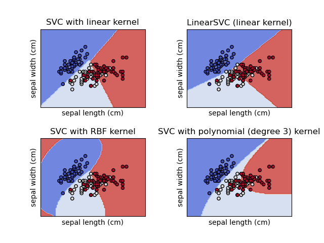
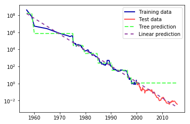
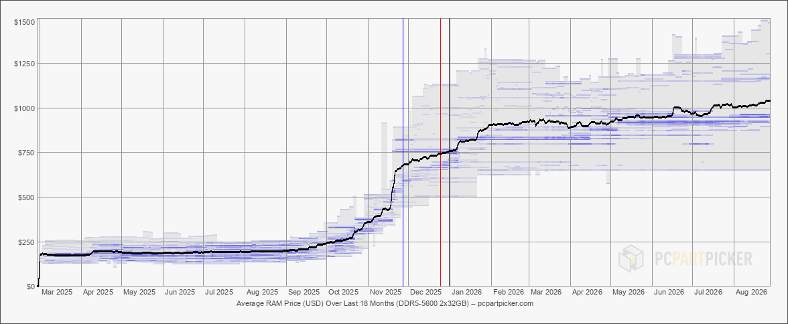

2. Basic machine learning models
Code
 Demo Notebook
Demo Notebook Demo Data
Demo DataSlides
 PDF Slides
PDF Slides HTML Slides
HTML SlidesTopic overview
- Some common machine learning tasks and models
- Evaluating model performance
- Limitations and assumptions
Resources used: - Feature Engineering Chapter 1 - Introduction to Machine Learning with Python. Available at MRU Library - Scikit-learn User Guide - Hands on Machine Learning with Scikit-Learn and Tensorflow/PyTorch. Available at MRU Library
Machine learning
- To appropriately process the data, we need to know why we are doing it and what assumptions we’re making
- Modern machine learning toolkits (such as scikit-learn) are so easy to use, they’re easy to use inappropriately
- Goal: just enough understanding to use basic models responsibly
Why are we processing data?

* No reinforcement learning in this course, sorry
A selection of common models
Supervised
- Linear/logistic regression
- Decision trees
- Support vector machines
Unsupervised
- K-means clustering
- Principle component analysis
No free lunch
- A theory-heavy paper in 1996 showed that there is no one machine learning algorithm that excels in all situations
- Subsequent work has confirmed this, e.g. a 2018 analysis
- Tree-based methods, particularly gradient boosted trees tend to outperform other algorithms the most, but still have limitations
- What does it mean to “outperform”?
Model evaluation: Classification
True positive: predicted positive, label was positive (\(TP\)) ✔️
True negative: predicted negative, label was negative (\(TN\)) ✔️
False positive: predicted positive, label was negative (\(FP\)) ❌ (type I)
False negative: predicted negative, label was positive (\(FN\)) ❌ (type II)
Accuracy is the fraction of correct predictions, given as:
\[\mathrm{accuracy} = \frac{TP + TN}{TP + TN + FP + FN}\]
Precision and recall
Precision: Out of all the positive predictions, how many were correct? \[\mathrm{precision} = \frac{TP}{TP + FP}\]
Recall: Out of all the positive labels, how many were correct? \[\mathrm{recall} = \frac{TP}{TP + FN}\]
Specificity: Out of all the negative labels, how many were correct? \[\mathrm{specificity} = \frac{TN}{TN + FP}\]
Confusion matrix
| Predicted Positive | Predicted Negative | |
|---|---|---|
| True Positive | TP | FN |
| True Negative | FP | TN |
- The axes might be reversed, but a good predictor will have strong diagonals
- There’s also the F1 score, or harmonic mean of precision and recall: \[F1 = 2 \cdot \frac{\mathrm{precision} \cdot \mathrm{recall}}{\mathrm{precision} + \mathrm{recall}}\]
ROC Curves
The receiver operating characteristic curve is a plot of the true positive rate (recall or sensitivity) vs. false positive rate (1 - specificity) as the detection threshold changes
The diagonal is the same as random guessing
A perfect classifier would hug the top left corner
Fun fact: the name comes from WWII radar operators, where true positives were airplanes and false positives were noise
Example 1: Support Vector Classifier

- Linear model that finds vector(s) to best separate classes
- “Kernel trick” allows for nonlinear boundaries
- Check out the SVM Appendix of Hands-on Machine Learning by Aurélien Geron for more info
Example 2: Decision Trees
- Family of models including:
- decision trees
- random forests
- gradient boosted decision trees
- Finds thresholds for features that best separates classes
- Controllable through depth parameter
Model evaluation: regression
For a predicted \(\hat{\mathbf{y}}\) and actual \(\mathbf{y}\), metrics include:
- Mean squared error: \(MSE = \frac{1}{n}\sum_{i=1}^n (y_i - \hat{y}_i)^2\)
- Root mean squared error: \(RMSE = \sqrt{MSE}\)
- Mean absolute error: \(MAE = \frac{1}{n}\sum_{i=1}^n |y_i - \hat{y}_i|\)
- Mean absolute percentage error: \(MAPE = \frac{100}{n}\sum_{i=1}^n \left|\frac{y_i - \hat{y}_i}{y_i}\right|\)
- Coefficient of determination: \(R^2 = 1 - \frac{\sum_{i=1}^n (y_i - \hat{y}_i)^2}{\sum_{i=1}^n (y_i - \bar{y})^2}\) (\(R^2\) has some caveats)
Regression: ordinary least squares
In 1D, estimate modeled as: \(\hat{y_i} = wx_i + b\), where \(i\) denotes a sample
Vector form: \(\mathbf{\hat{y}} = w\mathbf{x} + b\)
Goal is to minimize the Mean Square Error:
\[\begin{aligned} MSE &= \frac{1}{m} \sum_{i=1}^m (\hat{y} - y_i)^2 = \frac{1}{m} \sum_{i=1}^m (b + w x_i - y_i)^2\\ MSE &= \frac{1}{m} (\hat{\mathbf{y}} - \mathbf{y})^T (\hat{\mathbf{y}} - \mathbf{y}) \end{aligned}\]
Regression: N-dimensional
Most of the time we have \(N > 1\) features
N-D: \(\hat{y_i} = w_1x_{1i} + w_2x_{2i} + ... + w_nx_{ni} + b\)
Common to use a design matrix \(\mathbf{X}\) to represent the feature values:
\[\mathbf{X} = \begin{bmatrix} 1 & x_{11} & x_{12} & \cdots & x_{1n} \\ 1 & x_{21} & x_{22} & \cdots & x_{2n} \\ \vdots & \vdots & \ddots & \vdots \\ 1 & x_{m1} & x_{m2} & \cdots & x_{mn} \end{bmatrix}\]
where each row is an instance (sample) and each column is a feature.
Regression: N-dimensional
We can rewrite the estimate in matrix notation: \[\hat{\mathbf{y}} = \mathbf{X} \mathbf{\theta}\]
The MSE can be written as:
\[MSE = \frac{1}{m}\sum_{i=1}^m (\hat{y}_i - y_i)^2 = \frac{1}{m} (\mathbf{X} \mathbf{\theta} - \mathbf{y})^T (\mathbf{X} \mathbf{\theta} - \mathbf{y})\]
This has a closed form solution, but it is computationally expensive
Regression: Decision trees

Figure 2-32. Comparison of predictions made by a linear model and predictions made by a regression tree on the RAM price data. Source: Introduction to Machine Learning with Python

Price of DDR5-5600 2X32GB RAM since March 2025 [PCPartPicker]
Comparison of supervised model families
Linear models
- Very fast, particularly inference
- Scalable to large number of features
- Can model nonlinearity with kernel trick
- Easy to regularize
- Difficult to interpret
- Sensitive to parameters and preprocessing
- Data needs to be on same scale
- Slow to train on large datasets
Decision Trees
- Highly explainable
- Fast to train
- Few parameters to tune
- Little preprocessing needed
- Provides feature importance
- Prone to overfitting
- High variance
- Poor extrapolation
Unsupervised learning
- Learning patterns without labels, such as:
- Anomaly detection
- Density estimation
- Dimensionality reduction
- Clustering
Why is unsupervised learning important?
Clustering: \(k\)-means
- Goal: Partition \(N\) samples into \(k\) clusters
- Naive algorithm:
- Initialize \(k\) centroid locations
- Assign each sample to the nearest centroid
- Recalculate centroids for each cluster
- Repeat steps 2-3 until clusters stabilize
\[\sum_{i=0}^N \min_{\mu_j \in C}(\Vert x_i - \mu_j \Vert^2)\]
\(k\)-means pros and cons
- Intuitive
- Easy to implement
- Relatively scalable (\(O(N)\))
- Need to know how many clusters
- Sensitive to initialization
- Not guaranteed to converge to global minimum
- Doesn’t like anisotropy and unequal variance
Scikit-learn has a great reference table of other clustering methods
Coming up next
- Exploring and understanding your data
- Splitting your data
- Repeatability considerations
- Stratified sampling
- Assignment 1: Simple modelling